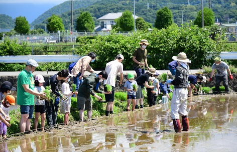
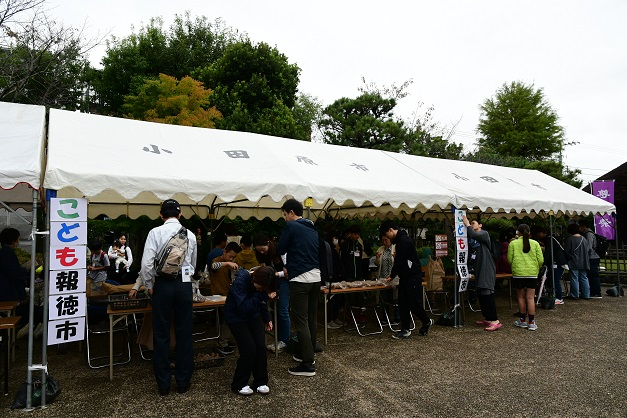
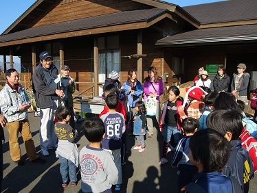

ホーム ／ 活動場所
活動場所
活動は、大井町と小田原市内の5か所で行います。主な舞台は、酒匂川左岸の田園地帯にある報徳楽校の田んぼです。
ひょうたん池広場・報徳楽校の田んぼ

大井町西大井、酒匂川左岸の田園地帯にあります。田植えと稲刈り、秋のバーベキューはここで行います。
小田急線の開成駅から足柄紫水大橋を渡り、大井町側の橋のたもと近くに報徳楽校の田んぼがあります。近くにあるひょうたん型の池の周辺が活動場所です。
田んぼには「報徳ママ倶楽部」の看板を立てていますので、お近くにお越しの際はぜひ覗いてみてください。
お車の場合：足柄紫水大橋の北側の側道に駐車スペースがあります。
小田原市尊徳記念館

4月の入楽式と、10月のこども報徳市を行う場所です。
二宮尊徳翁が生まれた土地に建てられた記念館で、地域の活動の場としてよく使われています。生家も隣接しており、史跡めぐりの出発点にもなります。
〒250-0852 小田原市栢山2065-1
電話 0465-36-2381
曽我みのり館 分館

7月のカレー作りと報徳学習、12月の修了式ともちつきを行います。曽我梅林の中に位置し、のどかで自然豊かな場所です。
小田原市上曽我2984
電話 0465-42-5320
大井町 四季の里（直売所）
11月の活動で使います。直売所の隣に研修室があり、外には石釜が設置されています。
足柄上郡大井町柳265番地
電話 0465-84-5029
山田炭焼き小屋
11月の活動で使うことがあります。青い屋根が目印です。
道順
国道255号「大井町坊村」の信号をBROOKS方面へ曲がり、めがね道トンネルを越えた先のT字路を右折。2本目の道をエバラ食品研究所方面へ左折し、坂を上るとすぐ左側に見えてきます。